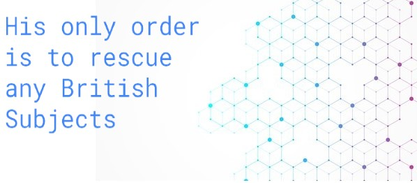
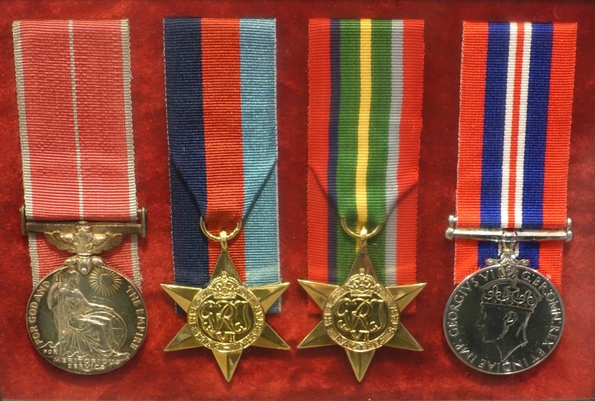
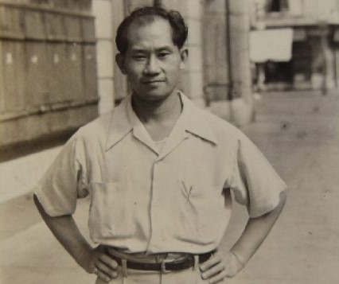
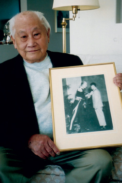

Born on July 15, 1911 in Vancouver BC, he was the son of a successful merchant Yuen Chong, who retired back in Hong Kong. Chong recieved minimal education (dropped out of high school) and was an unmarried cook. He had applied to join the Canadian Army but was rejected due to his Chinese- Canadian status. On 1941, his sister his father died in Canton (Guangzhou) and he set sail for Hong Kong to prepare his father's mansion for selling; this didn't turn out well and months passed without progress. On December 8, 1941, the Japanese launched an invasion on Hong Kong and he was trapped on the island when Hong Kong surrendered on Christmas, 1941. One day when he was planning to try to find a way back to Canada, he happened to look from his sister's veranda (he was staying at his sister's apartment) at a wounded-in-action Canadian soldier begging for water. When his ruckus attracted 2 Japanese soldiers, the second lieutenant reached behind his back and pulled out a pistol and shot the wounded soldier on the spot. This act of malice angered Bill Chong, and he decided to escape to China. “I had seen so much of the war in Hong Kong I was full of hate … I had seen how the Japanese killed people, killed Canadians without any cause. They’d just shoot anybody they want, they’d shoot people left and right. I said, ‘I’ve got to do something about this.’ I felt like getting a gun and just going out and shooting a few Japanese [soldiers]. So I escaped to China“ was what he reasoned.
On his journey to China, Chong sold everything he owned and burned his Canadian passport, reasoning that he will be excecuted without a doubt if caught with those. He hoped to buy food on his journey to the free parts of China, but found out all the settlements on the road flew Japanese flags, so he ended up digging vegetables at midnight for food. Once he reached China, hoping he could join the Chinese guerrillas, was instead recruited by Australian Coloniel Lindsay Ride, apart of the British Army A Group BAAG (which were a group of POW rescuers, disguising their espionage role). He thought the BAAG was the Army. The British military warmly welcomed Chong's support, whereas the Canadian forces rejected him (as they had rejected any other "Chinamen"). The division Chong joined was the MI9 (British Directorate of Military Intelligence Section 9), who gave the spy name Agent 50 (pronounced five oh) to Chong. His method of reporting back to Britain would be to message from Chinese telegraph offices, keeping "50" somewhere on a transmitted document such as “... I was going back for my mother’s 50th birthday. I’m waiting for transportation...”, and his first mission was to make sure the British Consul at Macau (neutral, because Macau is a satellite state of Portugal which remained neutral) was still safe, as Japan had surrounded and kept Macau as a Japanese protectorate. Chong submerged himself into the South East Asian criminal world, and used it (paid bandits) to smuggle himself into Macau, where he returns back to China knowing the Consul is fairing well. His later missions include retrieving fallen airmen (Second Sino-Japanese War, Doolittle Raiders), scouting Japanese positions and rescuing POWs/ civilians; his role lasted for 5 years (1941-1946), and is credited to saving thousands of POW/ civilians and hundreds of downed airmen back to Chongqing, China (Allied Command HQ in China), although he never kept any records as it may jeopardize the escapee. He also helped form a network of Red Cross supply chain. He walked barefoot for over 50-80 km for many occaisions, and slept on the ground. Sometimes, he was "lucky" enough to sleep on the wooden floor of HQ.

| Escape 1 | His first few missions got himself captured by the Japanese and was locked in a fishing boat with the ship captain, drifting out to sea. He escaped when the captain remembered a rotting wood plank, burrowed out, and unlocked the cargo hold, freeing Chong. |
|---|---|
| Escape 2 | His second capture was when he was kidnapped by bandits. His escape was done when he provided medical aid to a wounded kidnapper. |
| Escape 3 | His third attempt was when he was captured by Japanese soldiers hiding with his hired guide. He and his guide was dragged out and interrogated. When the Japanese soldier asked if Chong were to be shot or beheaded, he swiftly replied "shoot me." The Japanese soldiers handed them shovels to dig their own graves. The hard ground made progress slow, and an impatient soldier yelled out "bullets cost money" and was about to behead Chong, but his guide blurted out Japanese and found a business card of a former Japanese spy master (now major), who was the guide's former teacher which used former pupils as spies for him. Impressed and fearful the duo may have connections with a Japanese major, they were released, avoiding death by a hair. He recalls to laying down on the ground shivering afterwards. |
He disguised himself as a peasant in China, covered in rags holding a cane with a limp. The hollowed out cane was filled with medical supplies and various other cargo, smuggled into areas in need. Although he didn't keep any personal records as that may jeopardize the escapee, he is credited to saving hundreds of downed Allied airmen, thousands of civilians and delivering countless supplies to BAAG hospitals. Between trips, he helped the hospitals with various tasks such as repairing furniture, doors, repainting them and, on one occaision, overhauling the plumbing system of a hospital. His most traumatic experience between the expedition is assisting surgery. He recalls the trauma of swatting away flies and soaking blood for the surgeon. Afterwards, he was stunned by the incision, and couldn't do anything that night.
In the end, he recieved 4 medals, one of which is the British Empire Medal (the sole Chinese militaryman to recieve the military BEM).
After the war, he was invited to a court meeting persecuting Lee, who worked for Japan in Hong Kong and indirectly caused many deaths. The Chief Justice, Leo Deamata and prosecutor Marcus De Silva, was instantly recognized by Bill, who remembers saving them both from Hong Kong when they were tortured by the Japanese. Later, the Lee person was hanged for walking over a dead body and putting the Japanese flag over it.
He later on kept being a spy doing missions into Communist China for Britain in Hong Kong doing photographic missions, and finally retired in 1976, at the age of 65. During his time in Hong Kong, he was an entrepeneur, opened 2 resturants and a transportation company. After coming back to Canada, he was noticed recieving the BEM, and joined the veterans group in Canada. He opened 2 Chinese cafés, one in Chemainus (Nic's Café, purchased in the 1980s)*, Vancouver Island and worked at the Malaspina College near Nanaimo. After 2000, the CBC aired a documentary on him (I can't find the documentary but I found a short 7 minute interview https://www.veterans.gc.ca/eng/remembrance/those-who-served/chinese-canadian-veterans/profile/chongb#transcript). He died in 2006 at the age of 96, living in Duncan.
*I assume it's Nic's Café, because Google search of a "bookstore" in Chemainus beside a café yielded that result.

Bill Chong's 4 medals | Bill Chong around the time he became a spy | Bill Chong during an interview